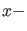

Next: Bifurcations along a flip Up: Period Doubling Previous: Mathematical definition Contents
The  output is in this case a matrix and each column corresponds to a computed period doubling limit cycle. The last three components
of each column contain the value of the period  and the values of the two active parameters, in that order.
and the values of the two active parameters, in that order.